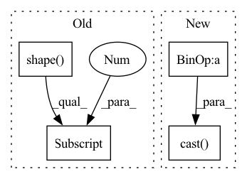

Pattern ID :17351
Before Change
>>> plt.imshow(np.hstack(aa))
// Get a sample from the Beta distribution
batch_size = tf.shape(images)[0]
_, hh, ww, _ = images.shape
mix_weight = sample_beta_distribution(1, alpha, alpha)[0] // same value in batch
if mix_weight < min_mix_weight or 1 - mix_weight < min_mix_weight:
// For input_shape=224, min_mix_weight=0.01, min_height = 224 * 0.1 = 22.4After Change
mix_weight = sample_beta_distribution((), alpha, alpha)
offset_height, offset_width, target_height, target_width = get_box(mix_weight, hh, ww)
mix_weight = 1.0 - tf.cast(target_height * target_width, "float32") / tf.cast( hh * ww, "float32")
crops = tf.image.crop_to_bounding_box(images, offset_height, offset_width, target_height, target_width)
pad_crops = tf.image.pad_to_bounding_box(crops, offset_height, offset_width, hh, ww)
images = images - pad_crops + pad_crops[::-1]In pattern: SUPERPATTERN
Frequency: 3
Non-data size: 4
Instances Fragment ID: 57619695
Project Name: leondgarse/keras_cv_attention_models
Commit Name: a05afc217c7710193105435e4240723aba7eef2b
Time: 2021-12-05
Author: leondgarse@gmail.com
File Name: keras_cv_attention_models/imagenet/data.py
M Class Name: AnonimousClass
N Class Name: AnonimousClass
M Method Name: cutmix(3)
N Method Name: cutmix(4)
M Parent Class:
N Parent Class:
M File Name: keras_cv_attention_models/imagenet/data.py
N File Name: keras_cv_attention_models/imagenet/data.py
M Start Line: 263
M End Line: 293
N Start Line: 313
N End Line: 323
Before Change
def rand_translation(x, ratio=(1, 8)):
B, H, W = tf.shape(x)[0], tf.shape(x)[1] , tf.shape(x)[2]
translation_x = tf.random.uniform([B, 1], -(W * ratio[0] // ratio[1]), (W * ratio[0] // ratio[1]) + 1, dtype=tf.int32)
translation_y = tf.random.uniform([B, 1], -(H * ratio[0] // ratio[1]), (H * ratio[0] // ratio[1]) + 1, dtype=tf.int32)
grid_x = tf.clip_by_value(tf.expand_dims(tf.range(W, dtype=tf.int32), 0) + translation_x + 1, 0, W + 1)After Change
def rand_translation(x, ratio=0.125):
batch_size = tf.shape(x)[0]
image_size = tf.shape(x)[1:3]
shift = tf.cast( tf.cast(image_size, tf.float32) * ratio + 0.5, tf.int32)
translation_x = tf.random.uniform([batch_size, 1], -shift[0], shift[0] + 1, dtype=tf.int32)
translation_y = tf.random.uniform([batch_size, 1], -shift[1], shift[1] + 1, dtype=tf.int32)
grid_x = tf.clip_by_value(tf.expand_dims(tf.range(image_size[0], dtype=tf.int32), 0) + translation_x + 1, 0, image_size[0] + 1)
grid_y = tf.clip_by_value(tf.expand_dims(tf.range(image_size[1], dtype=tf.int32), 0) + translation_y + 1, 0, image_size[1] + 1) Fragment ID: 57619693
Project Name: mit-han-lab/data-efficient-gans
Commit Name: 96d6d871bf47d8dd3d280b77a5c3a01c674a7acd
Time: 2020-07-01
Author: zsyzzsoft@gmail.com
File Name: DiffAugment-stylegan2/DiffAugment_tf.py
M Class Name: AnonimousClass
N Class Name: AnonimousClass
M Method Name: rand_translation(2)
N Method Name: rand_translation(2)
M Parent Class:
N Parent Class:
M File Name: DiffAugment-stylegan2/DiffAugment_tf.py
N File Name: DiffAugment-stylegan2/DiffAugment_tf.py
M Start Line: 41
M End Line: 47
N Start Line: 41
N End Line: 49
Before Change
def rand_translation(x, ratio=(1, 8)):
B, H, W = tf.shape(x)[0], tf.shape(x)[1] , tf.shape(x)[2]
translation_x = tf.random.uniform([B, 1], -(W * ratio[0] // ratio[1]), (W * ratio[0] // ratio[1]) + 1, dtype=tf.int32)
translation_y = tf.random.uniform([B, 1], -(H * ratio[0] // ratio[1]), (H * ratio[0] // ratio[1]) + 1, dtype=tf.int32)
grid_x = tf.clip_by_value(tf.expand_dims(tf.range(W, dtype=tf.int32), 0) + translation_x + 1, 0, W + 1)After Change
def rand_translation(x, ratio=0.125):
batch_size = tf.shape(x)[0]
image_size = tf.shape(x)[1:3]
shift = tf.cast( tf.cast(image_size, tf.float32) * ratio + 0.5, tf.int32)
translation_x = tf.random.uniform([batch_size, 1], -shift[0], shift[0] + 1, dtype=tf.int32)
translation_y = tf.random.uniform([batch_size, 1], -shift[1], shift[1] + 1, dtype=tf.int32)
grid_x = tf.clip_by_value(tf.expand_dims(tf.range(image_size[0], dtype=tf.int32), 0) + translation_x + 1, 0, image_size[0] + 1)
grid_y = tf.clip_by_value(tf.expand_dims(tf.range(image_size[1], dtype=tf.int32), 0) + translation_y + 1, 0, image_size[1] + 1) Fragment ID: 57619691
Project Name: mit-han-lab/data-efficient-gans
Commit Name: 96d6d871bf47d8dd3d280b77a5c3a01c674a7acd
Time: 2020-07-01
Author: zsyzzsoft@gmail.com
File Name: DiffAugment_tf.py
M Class Name: AnonimousClass
N Class Name: AnonimousClass
M Method Name: rand_translation(2)
N Method Name: rand_translation(2)
M Parent Class:
N Parent Class:
M File Name: DiffAugment_tf.py
N File Name: DiffAugment_tf.py
M Start Line: 41
M End Line: 47
N Start Line: 41
N End Line: 49